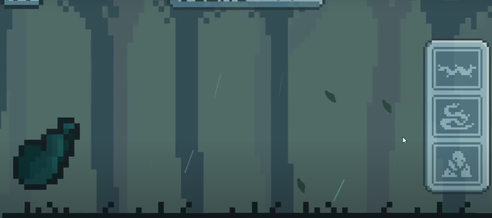

TapRoots
Autor:
William,Lucas,Bernardo,Agratha
Data de criação:
2023
Estilo:
2D
Genero:
Ação, Arcade
Motivação
Este jogo foi feito para Global Game jam 2023 na PUC, em que o tema era sobre raizes, a ideia meio que literal e sobre você tentar passar o maximo possivel do jogo sem tentar morrer e chegar o mais longe possivel no mapa fazendo assim o maximo de pontos.
Ambiente
O jogo se passa numa floresta densa cheia de buracos,deslizes e montes de terras, com esse ambiente usamos as raizes para podermos passar por esses obstaculos
Gameplay
A gameplay do jogo se baseia em o player se mexer sozinho para frente e voce como jogador impedir a morte dele usando seus poderes de raizes, voce usa esses poderes com os botões na direita cada um equivale a um obstaculo para voce desviar, se usado no tempo certo o player sobrevive, se nao, ele morre
Engine/Linguagem usadas
Para este projeto foi principalmente utilizado a Unity3D, como comum desta desta Engine, a linguagem que mais utilizamos foi o C#
Noticias que o jogo foi citado
Link
Link para o APK do jogo (Atenção este jogo funciona apenas em Androids e pode ser muito pesado)